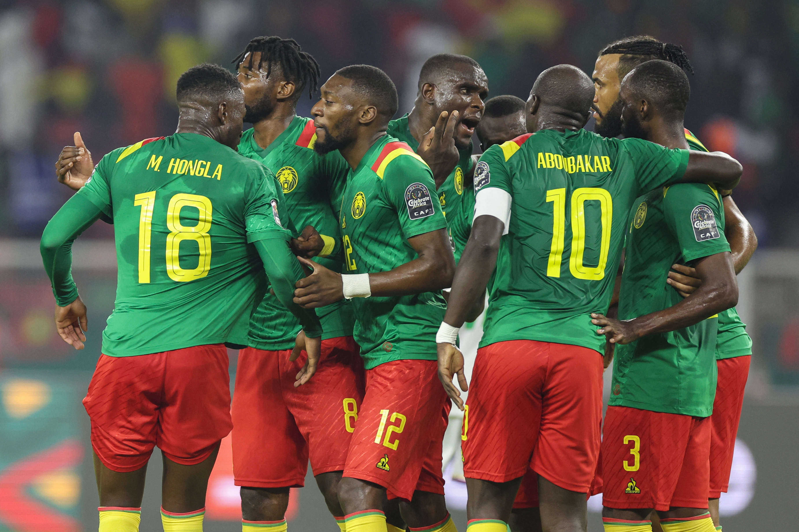
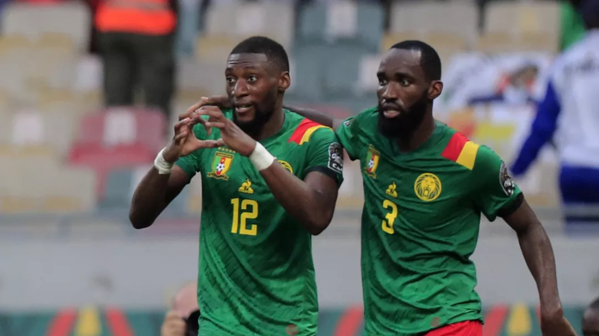
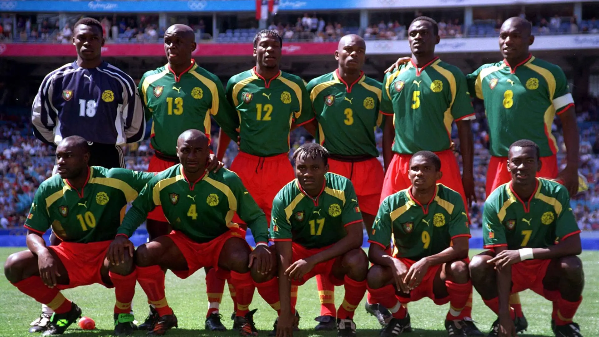
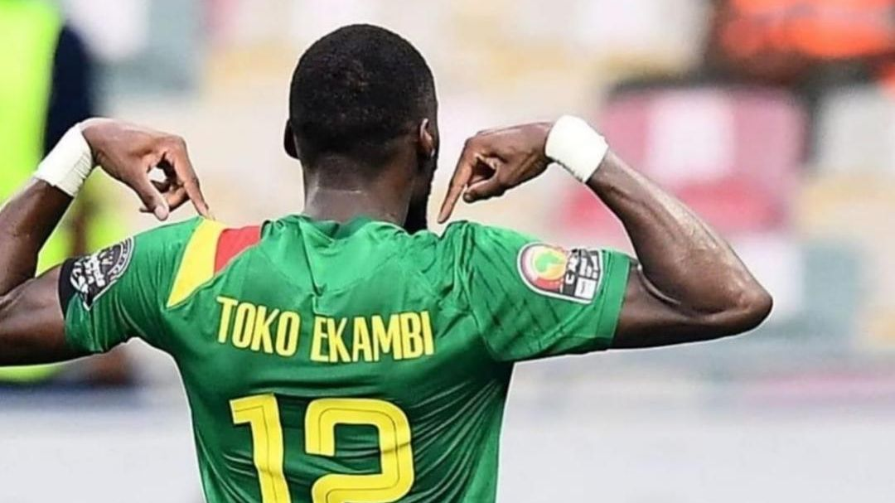

Seleção Camaronesa

Os camaroneses são os menos experientes no assunto Copa do Mundo.
No total, participou de sete edições, A melhor campanha foi o sétimo lugar no Mundial de 1990.
Ocupa o 37º lugar no ranking da Fifa.
Camarões nunca ganhou uma Copa do Mundo!




Técnico: Rigobert Song
GOL
André Onana - Ajax
Devis Epassy Mboka - OFI
DEFESA
Ambroise Oyongo - Montpellier II
Collins Fai - Standard Liege
H. Mamoudou - Cotonsport
Harold Moukoudi - Saint-Étienne
Jean Junior Onana Onana - Bordeaux
Jean-Charles Castelletto - Nantes
Michael Ngadeu - Gent
Nouhou Tolo - Seattle Sounders
Olivier Mbaizo - Philadelphia Union
MEIO
André Zambo Anguissa - Napoli
F. Oukine Tcheoude -Cotonsport
Fabrice Badouina Onana - Hammam-Lif
Gaël Ondoua - Hannover 96
Jeando Fuchs - Peterborough United
Kévin Soni - Asteras Tripolis
Martin Hongla - Hellas Verona
Nicolas Ngamaleu - Young Boys
ATAQUE
B. Soga - CD Guadalajara
Choupo-Moting - Bayern München
Igniatius Ganago - Lens
P. Wassou - Cotonsport
Karl Toko Ekambi - Lyon
Leandre Tawamba - Al Taawon